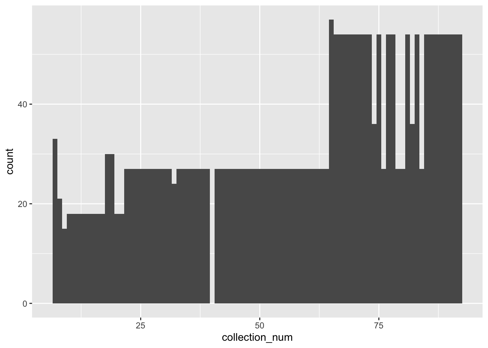
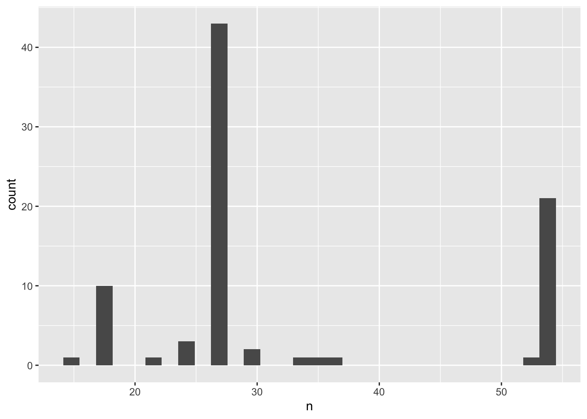
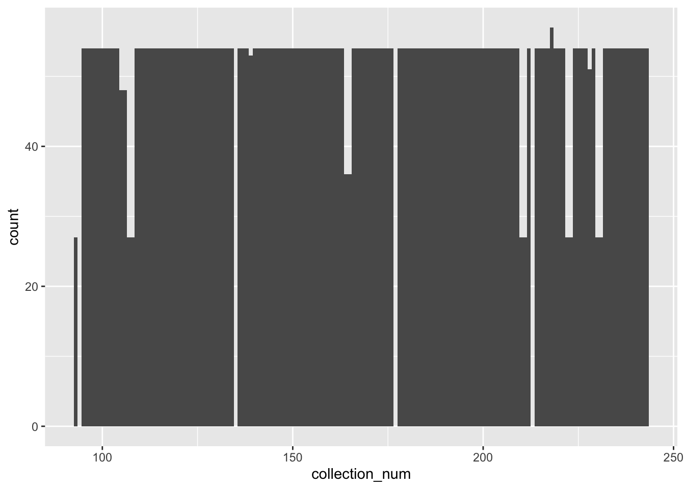
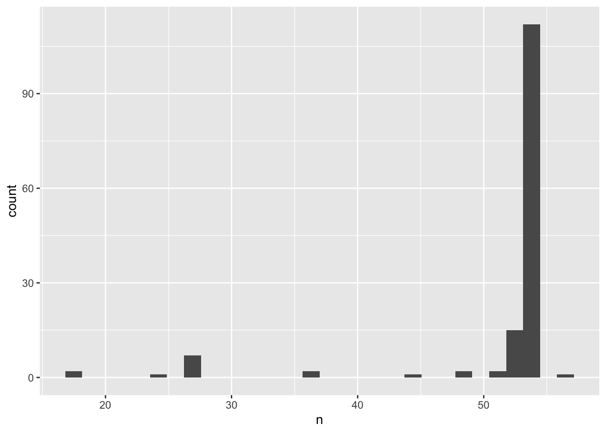
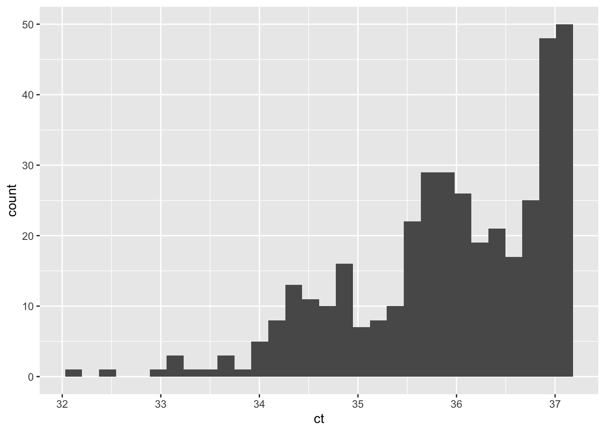
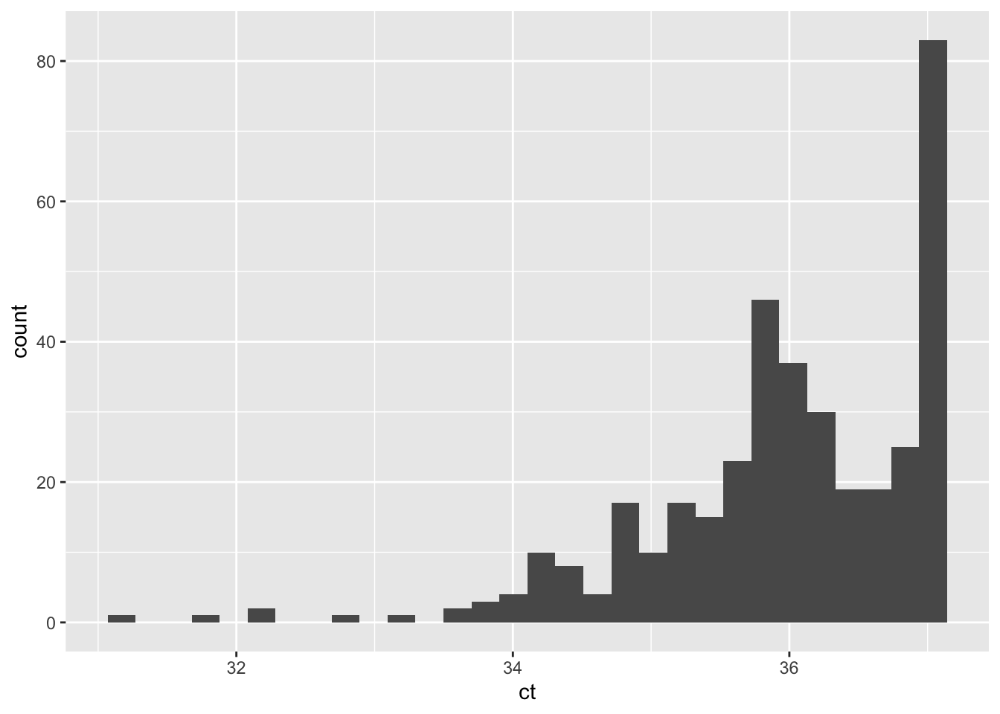

knitr::opts_chunk$set(message=F)Raw data processing
Info
This script does the following:
Loads raw data files
Checks for missing data in all raw data files
Converts qPCR non-detects to NAs
Calculates LOD and LOQ values for all four assays
Transforms NAs to LOD for each assay
Binds all qPCR data sets with WWTP data
Binds all DPH COVID data
Load packages
library(tidyverse)
library(skimr)
library(here)
library(ggplot2)
library(readr)
library(dplyr)
library(stats)Load raw data
# Load N1 data
n1_stepone_v2 <- read_csv(here("data/raw_data/updated_data/stepone_n1_FINAL_UPDATE.csv")) #year 1 data
n1_cfx_v2 <- read_csv(here("data/raw_data/updated_data/cfx_n1_FINAL_UPDATE.csv")) #year 2 data
# Load N2 data
n2_stepone_v2 <- read_csv(here("data/raw_data/updated_data/stepone_n2_FINAL_UPDATE.csv")) #year 1 data
n2_cfx_v2 <- read_csv(here("data/raw_data/updated_data/cfx_n2_FINAL_UPDATE.csv")) #year 2 data
# Load Plant data
plant_v2 <- read_csv(here("data/raw_data/updated_data/plant_data_UPDATED.csv"))
# Load COVID-19 Symptom data
covid_symptom <- read_csv(here("data/raw_data/ga_covid_data/epicurve_symptom_date.csv")) %>%
filter(county=="Clarke") %>%
select(symptom.date=`symptom date`,
cases, moving_avg_cases)
#Load COVID-19 Confirmed Case Data
covid_case <- read_csv(here("data/raw_data/ga_covid_data/epicurve_rpt_date.csv")) %>%
filter(county=="Clarke") %>%
select(report_date,
cases,
moving_avg_cases)
#Load COVID-19 Testing Data
covid_testing <- read_csv(here("data/raw_data/ga_covid_data/pcr_antigen_col.csv")) %>%
filter(county=="Clarke") %>%
select(collection_date = collection_dt,
pcr_tests = `ALL PCR tests performed`,
pcr_pos = `All PCR positive tests`,
pcr_pos_7dma = `7 day percent positive`,
pcr_pos_14dma = `14 day percent positive`)
#Load CFX recovery data
recovery_output <- read_csv(here("data/raw_data/recovery_data.csv"))
recovery_input <- read_csv(here("data/raw_data/calfguard.csv"))
#Load Hospitalization data
#hospitalization <- read_csv(here("data/raw_data/hospitalizations.csv"))Create df to check for missing collections
#Year 1
numbers <- 7:92
numbers_tbl <- tibble("collection_num"=numbers)
#Year 2
numbers2 <- 93:243
numbers2_tbl <- tibble("collection_num" =numbers2)
#full time series (for plant data)
numbers3 <- 7:243
numbers3_tbl <- tibble("Collection" =numbers3)Glance at data
StepOne N1
Count observations for each collection number
#count observations for each collection date, then visualize
n1_stepone_v2 %>% count(collection_num) %>% ggplot(aes(n)) +
geom_histogram()
n1_stepone_v2 %>% ggplot(aes(collection_num)) +
geom_histogram(binwidth = 1) #max should be either 27 or 54
Count observations for each biological replicate
#count observations for each sample id/biological rep, then visualize
n1_stepone_v2 %>% count(sample_id) %>% ggplot(aes(n)) +
geom_histogram() #there should be 3 technical reps
#check which collections have more than 3 technical reps
n1_stepone_v2 %>% count(sample_id) %>% filter(n>3)# A tibble: 10 × 2
sample_id n
<chr> <int>
1 MI_19_A 6
2 MI_19_B 6
3 MI_7_C 6
4 NO_19_A 6
5 NO_19_B 6
6 NO_65_B 6
7 NO_7_A 6
8 NO_7_C 9
9 NO_8_A 6
10 NO_9_A 6Merge data with number tibble to check missing collections
#count observations for each collection number
#merge with numbers tibble to check for missing collections
count_n1_stepone <- n1_stepone_v2 %>% count(collection_num)
count_n1_stepone <- merge(count_n1_stepone, numbers_tbl, by="collection_num", all.y=T)
count_n1_stepone collection_num n
1 7 33
2 8 21
3 9 15
4 10 18
5 11 18
6 12 18
7 13 18
8 14 18
9 15 18
10 16 18
11 17 18
12 18 30
13 19 30
14 20 18
15 21 18
16 22 27
17 23 27
18 24 27
19 25 27
20 26 27
21 27 27
22 28 27
23 29 27
24 30 27
25 31 27
26 32 24
27 33 27
28 34 27
29 35 27
30 36 27
31 37 27
32 38 27
33 39 27
34 40 NA
35 41 27
36 42 27
37 43 27
38 44 27
39 45 27
40 46 27
41 47 27
42 48 27
43 49 27
44 50 27
45 51 27
46 52 27
47 53 27
48 54 27
49 55 27
50 56 27
51 57 27
52 58 27
53 59 27
54 60 27
55 61 27
56 62 27
57 63 27
58 64 27
59 65 57
60 66 54
61 67 54
62 68 54
63 69 54
64 70 54
65 71 54
66 72 54
67 73 54
68 74 36
69 75 54
70 76 27
71 77 54
72 78 54
73 79 27
74 80 27
75 81 54
76 82 36
77 83 54
78 84 27
79 85 54
80 86 54
81 87 54
82 88 54
83 89 54
84 90 54
85 91 54
86 92 54#collection 40 is missing, but this is expectedStepOne N2
Merge data with number tibble to check missing collections
#count observations for each collection number
#merge with numbers tibble to check for missing collections
count_n2_stepone <- n2_stepone_v2 %>% count(collection_num)
count_n2_stepone <- merge(count_n2_stepone, numbers_tbl, by="collection_num", all.y=T)
count_n2_stepone collection_num n
1 7 33
2 8 21
3 9 15
4 10 18
5 11 18
6 12 18
7 13 18
8 14 18
9 15 18
10 16 18
11 17 18
12 18 30
13 19 30
14 20 18
15 21 18
16 22 27
17 23 27
18 24 27
19 25 27
20 26 27
21 27 27
22 28 27
23 29 27
24 30 27
25 31 27
26 32 24
27 33 27
28 34 27
29 35 27
30 36 27
31 37 27
32 38 27
33 39 27
34 40 NA
35 41 27
36 42 27
37 43 27
38 44 27
39 45 27
40 46 27
41 47 27
42 48 27
43 49 27
44 50 27
45 51 27
46 52 27
47 53 27
48 54 27
49 55 24
50 56 27
51 57 27
52 58 27
53 59 27
54 60 27
55 61 27
56 62 27
57 63 27
58 64 27
59 65 54
60 66 54
61 67 54
62 68 54
63 69 54
64 70 54
65 71 54
66 72 54
67 73 54
68 74 35
69 75 54
70 76 27
71 77 54
72 78 53
73 79 24
74 80 27
75 81 54
76 82 36
77 83 54
78 84 27
79 85 54
80 86 54
81 87 54
82 88 54
83 89 54
84 90 54
85 91 54
86 92 54#collection 40 is missing, but this is expectedCount observations for each collection number
#count observations for each collection date, then visualize
n2_stepone_v2 %>% count(collection_num) %>% ggplot(aes(n)) +
geom_histogram()
n2_stepone_v2 %>% ggplot(aes(collection_num)) +
geom_histogram(binwidth = 1) #max should be either 27 or 54
Count observations for each biological replicate
#count observations for each sample id/biological rep, then visualize
n2_stepone_v2 %>% count(sample_id) %>% ggplot(aes(n)) +
geom_histogram() #there should be 3 technical reps
#check which collections have more than 3 technical reps
n2_stepone_v2 %>% count(sample_id) %>% filter(n>3)# A tibble: 10 × 2
sample_id n
<chr> <int>
1 MI_19_A 6
2 MI_19_B 6
3 MI_7_C 6
4 NO_19_A 6
5 NO_19_B 6
6 NO_65_B 6
7 NO_7_A 6
8 NO_7_C 9
9 NO_8_A 6
10 NO_9_A 6CFX N1
Merge data with number tibble to check missing collections
#count observations for each collection number
#merge with numbers tibble to check for missing collections
count_n1_cfx <- n1_cfx_v2 %>% count(collection_num)
count_n1_cfx <- merge(count_n1_cfx, numbers2_tbl, by="collection_num", all.y=T)
count_n1_cfx collection_num n
1 93 27
2 94 NA
3 95 54
4 96 54
5 97 54
6 98 54
7 99 54
8 100 54
9 101 54
10 102 54
11 103 54
12 104 54
13 105 48
14 106 48
15 107 27
16 108 27
17 109 54
18 110 54
19 111 54
20 112 54
21 113 54
22 114 54
23 115 54
24 116 54
25 117 54
26 118 54
27 119 54
28 120 54
29 121 54
30 122 54
31 123 54
32 124 54
33 125 54
34 126 54
35 127 54
36 128 54
37 129 54
38 130 54
39 131 54
40 132 54
41 133 54
42 134 54
43 135 NA
44 136 54
45 137 54
46 138 54
47 139 53
48 140 54
49 141 54
50 142 54
51 143 54
52 144 54
53 145 54
54 146 54
55 147 54
56 148 54
57 149 54
58 150 54
59 151 54
60 152 54
61 153 54
62 154 54
63 155 54
64 156 54
65 157 54
66 158 54
67 159 54
68 160 54
69 161 54
70 162 54
71 163 54
72 164 36
73 165 36
74 166 54
75 167 54
76 168 54
77 169 54
78 170 54
79 171 54
80 172 54
81 173 54
82 174 54
83 175 54
84 176 54
85 177 NA
86 178 54
87 179 54
88 180 54
89 181 54
90 182 54
91 183 54
92 184 54
93 185 54
94 186 54
95 187 54
96 188 54
97 189 54
98 190 54
99 191 54
100 192 54
101 193 54
102 194 54
103 195 54
104 196 54
105 197 54
106 198 54
107 199 54
108 200 54
109 201 54
110 202 54
111 203 54
112 204 54
113 205 54
114 206 54
115 207 54
116 208 54
117 209 54
118 210 27
119 211 27
120 212 54
121 213 NA
122 214 54
123 215 54
124 216 54
125 217 54
126 218 57
127 219 54
128 220 54
129 221 54
130 222 27
131 223 27
132 224 54
133 225 54
134 226 54
135 227 54
136 228 51
137 229 54
138 230 27
139 231 27
140 232 54
141 233 54
142 234 54
143 235 54
144 236 54
145 237 54
146 238 54
147 239 54
148 240 54
149 241 54
150 242 54
151 243 54Count observations for each collection number
#count observations for each collection date, then visualize
n1_cfx_v2 %>% count(collection_num) %>% ggplot(aes(n)) +
geom_histogram()
n1_cfx_v2 %>% ggplot(aes(collection_num)) +
geom_histogram(binwidth = 1) #max should be 54
Check which collections are doubled
#check which collections are doubled
count_n1_cfx %>% filter(n==108)[1] collection_num n
<0 rows> (or 0-length row.names)Count observations for each biological replicate
#count observations for each sample id/biological rep, then visualize
n1_cfx_v2 %>% count(sample_id) %>% ggplot(aes(n)) +
geom_histogram() #there should be 3 technical reps
#almost all have 3 replicates, but there is a small amount with 6
#check which collections have more than 3 technical reps
n1_cfx_v2 %>% count(sample_id) %>% filter(n>3)# A tibble: 1 × 2
sample_id n
<chr> <int>
1 MI_218_C 6CFX N2
Merge data with number tibble to check missing collections
#count observations for each collection number
#merge with numbers tibble to check for missing collections
count_n2_cfx <- n2_cfx_v2 %>% count(collection_num)
count_n2_cfx <- merge(count_n2_cfx, numbers2_tbl, by="collection_num", all.y=T)
count_n2_cfx collection_num n
1 93 27
2 94 NA
3 95 54
4 96 54
5 97 54
6 98 57
7 99 54
8 100 54
9 101 54
10 102 54
11 103 54
12 104 54
13 105 48
14 106 54
15 107 18
16 108 27
17 109 54
18 110 54
19 111 54
20 112 54
21 113 54
22 114 54
23 115 54
24 116 54
25 117 54
26 118 54
27 119 54
28 120 54
29 121 54
30 122 54
31 123 54
32 124 54
33 125 54
34 126 54
35 127 54
36 128 54
37 129 54
38 130 54
39 131 54
40 132 54
41 133 54
42 134 54
43 135 NA
44 136 54
45 137 54
46 138 54
47 139 54
48 140 54
49 141 54
50 142 54
51 143 53
52 144 18
53 145 53
54 146 53
55 147 53
56 148 53
57 149 53
58 150 53
59 151 53
60 152 53
61 153 53
62 154 53
63 155 53
64 156 53
65 157 NA
66 158 53
67 159 53
68 160 54
69 161 54
70 162 54
71 163 54
72 164 36
73 165 36
74 166 54
75 167 48
76 168 54
77 169 54
78 170 54
79 171 54
80 172 54
81 173 54
82 174 54
83 175 54
84 176 51
85 177 NA
86 178 54
87 179 54
88 180 54
89 181 54
90 182 54
91 183 54
92 184 54
93 185 NA
94 186 54
95 187 54
96 188 54
97 189 54
98 190 54
99 191 54
100 192 54
101 193 54
102 194 54
103 195 54
104 196 54
105 197 54
106 198 54
107 199 54
108 200 54
109 201 54
110 202 54
111 203 54
112 204 54
113 205 54
114 206 54
115 207 54
116 208 54
117 209 54
118 210 27
119 211 24
120 212 54
121 213 NA
122 214 54
123 215 54
124 216 54
125 217 54
126 218 54
127 219 54
128 220 54
129 221 54
130 222 27
131 223 27
132 224 54
133 225 54
134 226 54
135 227 54
136 228 51
137 229 54
138 230 27
139 231 27
140 232 54
141 233 54
142 234 54
143 235 54
144 236 54
145 237 54
146 238 54
147 239 54
148 240 54
149 241 54
150 242 45
151 243 54Check which collections are doubled
#check which collections are doubled
count_n2_cfx %>% filter(n==108)[1] collection_num n
<0 rows> (or 0-length row.names)Count observations for each biological replicate
#count observations for each sample id/biological rep, then visualize
n2_cfx_v2 %>% count(sample_id) %>% ggplot(aes(n)) +
geom_histogram() #there should be 3 technical reps
#almost all have 3 replicates, but there is a small amount with 6 and some with 2
#check which collections have more than 3 technical reps
n2_cfx_v2 %>% count(sample_id) %>% filter(n>3)# A tibble: 3 × 2
sample_id n
<chr> <int>
1 CC_191_E 6
2 MI_144_DEF 6
3 MI_98_D 6Count observations for each collection number
#count observations for each collection date, then visualize
n2_cfx_v2 %>% count(collection_num) %>% ggplot(aes(n)) +
geom_histogram()
n2_cfx_v2 %>% ggplot(aes(collection_num)) +
geom_histogram(binwidth = 1) #max should be 54
Plant data
Merge data with number tibble to check missing collections
#count observations for each collection number
#merge with numbers tibble to check for missing collections
count_plant <- plant_v2 %>% count(Collection, date)
count_plant <- merge(count_plant, numbers3_tbl, by="Collection", all.y=T)
count_plant Collection date n
1 7 2020-06-30 3
2 8 2020-07-07 3
3 9 2020-07-14 3
4 10 2020-07-21 3
5 11 2020-07-28 3
6 12 2020-08-04 3
7 13 2020-08-11 3
8 14 2020-08-18 3
9 15 2020-08-25 3
10 16 2020-09-01 3
11 17 2020-09-08 3
12 18 2020-09-15 3
13 19 2020-09-22 3
14 20 2020-09-29 3
15 21 2020-10-06 3
16 22 2020-10-13 3
17 23 2020-10-20 3
18 24 2020-10-27 3
19 25 2020-11-02 3
20 26 2020-11-04 3
21 27 2020-11-09 3
22 28 2020-11-11 3
23 29 2020-11-16 3
24 30 2020-11-18 3
25 31 2020-11-23 3
26 32 2020-11-25 3
27 33 2020-11-30 3
28 34 2020-12-02 3
29 35 2020-12-07 3
30 36 2020-12-09 3
31 37 2020-12-14 3
32 38 2020-12-16 3
33 39 2020-12-21 3
34 40 2020-12-23 3
35 41 2020-12-28 3
36 42 2021-01-04 3
37 43 2021-01-11 3
38 44 2021-01-13 3
39 45 2021-01-19 3
40 46 2021-01-20 3
41 47 2021-01-25 3
42 48 2021-01-27 3
43 49 2021-02-01 3
44 50 2021-02-03 3
45 51 2021-02-08 3
46 52 2021-02-10 3
47 53 2021-02-15 3
48 54 2021-02-17 3
49 55 2021-02-22 3
50 56 2021-02-24 3
51 57 2021-03-01 3
52 58 2021-03-03 3
53 59 2021-03-08 3
54 60 2021-03-10 3
55 61 2021-03-15 3
56 62 2021-03-17 3
57 63 2021-03-22 3
58 64 2021-03-24 3
59 65 2021-03-29 3
60 66 2021-03-31 3
61 67 2021-04-05 3
62 68 2021-04-07 3
63 69 2021-04-12 3
64 70 2021-04-14 3
65 71 2021-04-19 3
66 72 2021-04-21 3
67 73 2021-04-26 3
68 74 2021-04-28 3
69 75 2021-05-03 3
70 76 2021-05-05 3
71 77 2021-05-10 3
72 78 2021-05-12 3
73 79 2021-05-17 3
74 80 2021-05-19 3
75 81 2021-05-24 3
76 82 2021-05-26 3
77 83 2021-06-01 3
78 84 2021-06-02 3
79 85 2021-06-07 3
80 86 2021-06-09 3
81 87 2021-06-14 3
82 88 2021-06-16 3
83 89 2021-06-21 3
84 90 2021-06-23 3
85 91 2021-06-28 3
86 92 2021-06-30 3
87 93 2021-07-06 3
88 94 2021-07-07 3
89 95 2021-07-12 3
90 96 2021-07-14 3
91 97 2021-07-19 3
92 98 2021-07-21 3
93 99 2021-07-26 3
94 100 2021-07-28 3
95 101 2021-08-02 3
96 102 2021-08-04 3
97 103 2021-08-09 3
98 104 2021-08-11 3
99 105 2021-08-16 3
100 106 2021-08-18 3
101 107 2021-08-23 3
102 108 2021-08-25 3
103 109 2021-08-30 3
104 110 2021-09-01 3
105 111 2021-09-07 3
106 112 2021-09-08 3
107 113 2021-09-13 3
108 114 2021-09-15 3
109 115 2021-09-20 3
110 116 2021-09-22 3
111 117 2021-09-27 3
112 118 2021-09-29 3
113 119 2021-10-04 3
114 120 2021-10-06 3
115 121 2021-10-11 3
116 122 2021-10-13 3
117 123 2021-10-18 3
118 124 2021-10-20 3
119 125 2021-10-25 3
120 126 2021-10-27 3
121 127 2021-11-01 3
122 128 2021-11-03 3
123 129 2021-11-08 3
124 130 2021-11-10 3
125 131 2021-11-15 3
126 132 2021-11-17 3
127 133 2021-11-22 3
128 134 2021-11-29 3
129 135 2021-12-01 3
130 136 2021-12-06 3
131 137 2021-12-08 3
132 138 2021-12-13 3
133 139 2021-12-15 3
134 140 2021-12-20 3
135 141 2021-12-27 3
136 142 2022-01-03 3
137 143 2022-01-05 3
138 144 2022-01-10 3
139 145 2022-01-12 3
140 146 2022-01-17 3
141 147 2022-01-19 3
142 148 2022-01-24 3
143 149 2022-01-26 3
144 150 2022-01-31 3
145 151 2022-02-02 3
146 152 2022-02-07 3
147 153 2022-02-09 3
148 154 2022-02-14 3
149 155 2022-02-16 3
150 156 2022-02-21 3
151 157 2022-02-23 3
152 158 2022-02-28 3
153 159 2022-03-02 3
154 160 2022-03-07 3
155 161 2022-03-09 3
156 162 2022-03-14 3
157 163 2022-03-16 3
158 164 2022-03-21 3
159 165 2022-03-23 3
160 166 2022-03-28 3
161 167 2022-03-30 3
162 168 2022-04-04 3
163 169 2022-04-06 3
164 170 2022-04-11 3
165 171 2022-04-13 3
166 172 2022-04-18 3
167 173 2022-04-20 3
168 174 2022-04-25 3
169 175 2022-04-27 3
170 176 2022-05-02 3
171 177 <NA> NA
172 178 2022-05-09 3
173 179 2022-05-11 3
174 180 2022-05-16 3
175 181 2022-05-18 3
176 182 2022-05-23 3
177 183 2022-05-25 3
178 184 2022-05-31 3
179 185 2022-06-01 3
180 186 2022-06-06 3
181 187 2022-06-08 3
182 188 2022-06-13 3
183 189 2022-06-15 3
184 190 2022-06-20 3
185 191 2022-06-22 3
186 192 2022-06-27 3
187 193 2022-06-29 3
188 194 2022-07-04 3
189 195 2022-07-06 3
190 196 2022-07-11 3
191 197 2022-07-13 3
192 198 2022-07-18 3
193 199 2022-07-20 3
194 200 2022-07-25 3
195 201 2022-07-27 3
196 202 2022-08-01 3
197 203 2022-08-03 3
198 204 2022-08-08 3
199 205 2022-08-10 3
200 206 2022-08-15 3
201 207 2022-08-17 3
202 208 2022-08-22 3
203 209 2022-08-24 3
204 210 2022-08-29 3
205 211 2022-08-31 3
206 212 2022-09-05 3
207 213 2022-09-07 3
208 214 2022-09-13 3
209 215 2022-09-14 3
210 216 2022-09-19 3
211 217 2022-09-21 3
212 218 2022-09-26 3
213 219 2022-09-28 3
214 220 2022-10-03 3
215 221 2022-10-05 3
216 222 2022-10-10 3
217 223 2022-10-12 3
218 224 2022-10-17 3
219 225 2022-10-19 3
220 226 2022-10-24 3
221 227 2022-10-26 3
222 228 2022-10-31 3
223 229 2022-11-02 3
224 230 2022-11-07 3
225 231 2022-11-09 3
226 232 2022-11-14 3
227 233 2022-11-16 3
228 234 2022-11-21 3
229 235 2022-11-28 3
230 236 2022-11-30 3
231 237 2022-12-05 3
232 238 2022-12-07 3
233 239 2022-12-12 3
234 240 2022-12-14 3
235 241 2022-12-19 3
236 242 2022-12-21 3
237 243 2023-01-04 3Count observations for each collection date
plant_v2 %>% ggplot(aes(Collection)) +
geom_histogram(binwidth = 1) #max should be 3
Cleaning and merging
qPCR data
Select for important variables, convert non-detects to NAs
#Select date, collection number, sample id/bio rep, target, and ct
#Convert Undetermined Cts to NAs
#StepOne N1
n1_stepone_clean <- n1_stepone_v2 %>% select(c(sample_date, collection_num, sample_id, target, ct)) %>%
mutate(ct=as.numeric(ifelse(ct=="Undetermined", NA, ct)))
#StepOne N2
n2_stepone_clean <- n2_stepone_v2 %>% select(c(sample_date, collection_num, sample_id, target, ct)) %>%
mutate(ct=as.numeric(ifelse(ct=="Undetermined", NA, ct)))
#CFX N1
n1_cfx_clean <- n1_cfx_v2 %>% select(c(sample_date, collection_num, sample_id, target, ct)) %>%
mutate(ct=as.numeric(ifelse(ct=="Undetermined", NA, ct)))
#CFX N2
n2_cfx_clean <- n2_cfx_v2 %>% select(c(sample_date, collection_num, sample_id, target, ct)) %>%
mutate(ct=as.numeric(ifelse(ct=="Undetermined", NA, ct)))Bind qPCR NA data sets
#Bind qpcr data
qpcr_na <- bind_rows(n1_stepone_clean, n2_stepone_clean, n1_cfx_clean, n2_cfx_clean) %>%
mutate(
date = sample_date,
facility=substr(sample_id, 1,2), #first two letters in sample_id is treatment facility ID
biological_replicate=substr(sample_id, nchar(sample_id), nchar(sample_id))) %>% #last number in sample_id is the biological rep
arrange(date, facility, target, biological_replicate) %>%
select(date, facility, target, biological_replicate, collection_num, ct)#select necessary variables
#Save to processed data folder
saveRDS(qpcr_na, here("data/processed_data/qpcr_na.rds"))Calculate LOD and LOQ for qPCR data
#Determine the LOD and LOQ by plotting the Normal QQ-Plot
qqnorm.ct.n1.stepone <- qqnorm(n1_stepone_clean$ct, plot.it = T) %>% as.data.frame()
qqnorm.ct.n2.stepone <- qqnorm(n2_stepone_clean$ct, plot.it = T) %>% as.data.frame()
qqnorm.ct.n1.cfx <- qqnorm(n1_cfx_clean$ct, plot.it = T) %>% as.data.frame()
qqnorm.ct.n2.cfx <- qqnorm(n2_cfx_clean$ct, plot.it = T) %>% as.data.frame()
tiff(filename = "figures/detection_lims.tiff", height = 9, width = 8, units = "in", res = 600)
#Create function to compute LOD and lOQ
qqnorm.Explorer.ct <- function(qqnorm.ct){
qqnorm.ct <- qqnorm.ct[which(complete.cases(qqnorm.ct)),]
qqnorm.ct <- qqnorm.ct[order(qqnorm.ct$x),]
qqnorm.ct <- cbind(qqnorm.ct, rbind(NA, qqnorm.ct[-nrow(qqnorm.ct),])) %>% setNames(., nm = c("x", "y", "x-1", "y-1"))
qqnorm.ct %<>% mutate(rise = y-`y-1`, run = x-`x-1`) %>% mutate(slope = rise / run)
qqnorm.ct$lod <- NA
qqnorm.ct$loq <- NA
prev.slope <- 1
lod.found <- 0
for(i in nrow(qqnorm.ct):2){
if(lod.found==0){
if(qqnorm.ct$slope[i]<1 & prev.slope <1){
qqnorm.ct$lod[i] <- 1
lod.found <- 1
}else{
prev.slope <- qqnorm.ct$slope[i]
}
}
if(lod.found==1){
if(qqnorm.ct$slope[i]>1){
qqnorm.ct$loq[i] <- 1
break
}else{
prev.slope <- qqnorm.ct$slope[i]
}
}
}
lod.ct <- qqnorm.ct$y[which(qqnorm.ct$lod==1)]
loq.ct <- qqnorm.ct$y[which(qqnorm.ct$loq==1)]
return(list(qqnorm.dataset = qqnorm.ct, lod = lod.ct, loq = loq.ct))
}
#Run function on each data set
qqnorm.ct.n1.stepone <- qqnorm.Explorer.ct(qqnorm.ct.n1.stepone)
qqnorm.ct.n2.stepone <- qqnorm.Explorer.ct(qqnorm.ct.n2.stepone)
qqnorm.ct.n1.cfx <- qqnorm.Explorer.ct(qqnorm.ct.n1.cfx)
qqnorm.ct.n2.cfx <- qqnorm.Explorer.ct(qqnorm.ct.n2.cfx)
#Save LOD and LOQ for each data set
n1_stepone_lod <- qqnorm.ct.n1.stepone$lod
n1_stepone_loq <- qqnorm.ct.n1.stepone$loq
n2_stepone_lod <- qqnorm.ct.n2.stepone$lod
n2_stepone_loq <- qqnorm.ct.n2.stepone$loq
n1_cfx_lod <- qqnorm.ct.n1.cfx$lod
n1_cfx_loq <- qqnorm.ct.n1.cfx$loq
n2_cfx_lod <- qqnorm.ct.n2.cfx$lod
n2_cfx_loq <- qqnorm.ct.n2.cfx$loq
n1_stepone_lod[1] 37.14072n2_stepone_lod[1] 37.10763n1_cfx_lod [1] 39.93763n2_cfx_lod[1] 39.9942Transform Ct NAs to calculate SARS-CoV-2 copies
#Replace NAs with limit of detection
#Use standard curve slope for each target to calculate copies per uL per rxn
#StepOne N1
n1_stepone_clean <- n1_stepone_clean %>%
mutate(ct = replace_na(ct, n1_stepone_lod),
copy_num_uL_rxn = as.numeric(10^((ct-34.008)/-3.389)))
#StepOne N2
n2_stepone_clean <- n2_stepone_clean %>%
mutate(ct = replace_na(ct, n2_stepone_lod),
copy_num_uL_rxn = as.numeric(10^((ct-32.416)/-3.3084)))
#CFX N1
n1_cfx_clean <- n1_cfx_clean %>%
mutate(ct = replace_na(ct, n1_cfx_lod),
copy_num_uL_rxn = as.numeric(10^((ct-36.046)/-3.5293)))
#CFX N2
n2_cfx_clean <- n2_cfx_clean %>%
mutate(ct = replace_na(ct, n2_cfx_lod),
copy_num_uL_rxn = as.numeric(10^((ct-37.731)/-3.2505)))Quick look at Ct distribution
#N1 StepOne
n1_stepone_clean %>% filter(ct<n1_stepone_lod) %>% ggplot(aes(ct)) + geom_histogram()
#N2 StepOne
n2_stepone_clean %>% filter(ct<n2_stepone_lod) %>% ggplot(aes(ct)) + geom_histogram()
#N1 CFX
n1_cfx_clean %>% filter(ct<n1_cfx_lod) %>% ggplot(aes(ct)) + geom_histogram()
#N2 CFX
n2_cfx_clean %>% filter(ct<n2_cfx_lod) %>% ggplot(aes(ct)) + geom_histogram()
#loooooots of non-detectsBind all qPCR data sets
#Bind qpcr data
qpcr_all <- bind_rows(n1_stepone_clean, n2_stepone_clean, n1_cfx_clean, n2_cfx_clean) %>%
mutate(
date = sample_date,
facility=substr(sample_id, 1,2), #first two letters in sample_id is treatment facility ID
biological_replicate=substr(sample_id, nchar(sample_id), nchar(sample_id))) %>% #last number in sample_id is the biological rep
arrange(date, facility, target, biological_replicate) %>%
select(date, facility, target, biological_replicate, collection_num, ct, copy_num_uL_rxn)#select necessary variables
#Save to processed data folder
saveRDS(qpcr_all, here("data/processed_data/qpcr_all.rds"))Combine plant and qPCR data sets
#Change plant variable names to match qPCR names, remove notes variable, convert millions of gallons to liters
plant_v2<- plant_v2 %>% rename(collection_num = Collection, facility = wrf) %>%
select(!notes) %>%
mutate(influent_flow_L = influent_flow_mg*1e6*231*(0.0254^3)*1000)
#Select qPCR variables to merge
#qpcr_all <- qpcr_all %>% select(!date)
#Merge and mutate
qpcr_plant_all <- merge(qpcr_all, plant_v2, by = c("collection_num", "facility", "date"), all = T) %>%
mutate(facility = as.factor(facility), #code each facility as a factor
facility = recode(facility, NO = "A", MI = "B", CC = "C"), #de-identify treatment facility
facility = ordered(facility, levels = c("A", "B", "C")), #set facility factor levels
copy_num_L = copy_num_uL_rxn*20/5*60/280*1000*1000,
viral_load = copy_num_L*influent_flow_L) #transform copies per uL of reaction to copies per liter
#Save to processed data folder
saveRDS(qpcr_plant_all, here("data/processed_data/qpcr_plant_all.rds"))Quick look at WBE data
#Filter for correct date range, then visualize observations for each collection
qpcr_plant_all %>% filter(between(collection_num, 7, 243)) %>%
ggplot(aes(collection_num)) +
geom_bar()
#which observations are low?
qpcr_plant_all %>% count(collection_num) %>%
filter(between(collection_num, 7, 243), n < 10) collection_num n
1 40 3
2 94 3
3 135 3
4 213 3Combine DPH COVID data sets
covid <- full_join(
covid_symptom%>%
select(cases.symptom.onset=cases, date=symptom.date),
covid_case%>%
select(cases.reported=cases, date=report_date),
by = "date"
) %>%
full_join(
covid_testing%>%
rename(date=collection_date),
by="date"
) %>%
select(date, cases.symptom.onset, cases.reported, pcr_tests, pcr_pos, pcr_pos_7dma, pcr_pos_14dma) %>%
mutate(prop_pos = pcr_pos/pcr_tests)
#Save to processed data folder
saveRDS(covid, here("data/processed_data/all_covid_combined.rds"))
covid# A tibble: 1,090 × 8
date cases.symptom.on…¹ cases…² pcr_t…³ pcr_pos pcr_p…⁴ pcr_p…⁵ prop_…⁶
<date> <dbl> <dbl> <dbl> <dbl> <dbl> <dbl> <dbl>
1 2020-02-01 0 0 0 0 NA NA NaN
2 2020-02-02 0 0 0 0 NA NA NaN
3 2020-02-03 0 0 0 0 NA NA NaN
4 2020-02-04 0 0 0 0 NA NA NaN
5 2020-02-05 0 0 0 0 NA NA NaN
6 2020-02-06 0 0 0 0 NA NA NaN
7 2020-02-07 0 0 0 0 0 NA NaN
8 2020-02-08 0 0 0 0 0 NA NaN
9 2020-02-09 0 0 0 0 0 NA NaN
10 2020-02-10 1 0 0 0 0 NA NaN
# … with 1,080 more rows, and abbreviated variable names ¹cases.symptom.onset,
# ²cases.reported, ³pcr_tests, ⁴pcr_pos_7dma, ⁵pcr_pos_14dma, ⁶prop_posFilter hospitalization data
Filter for state of GA, city of Athens, and for appropriate dates
#athens_hospitalizations <- hospitalization %>%
#filter(state=="GA", city=="ATHENS", between(collection_week, as.Date("2020-06-28"), as.Date("2023-01-08")))
#Save to processed data folder
#saveRDS(athens_hospitalizations, here("data/processed_data/athens_hospitalizations.rds"))Combine WBE and COVID data sets
wbe_covid <- merge(qpcr_plant_all, covid, by = "date", all = T) %>%
filter(between(date, as.Date("2020-06-30"), as.Date("2023-01-04")))
#I didn't save this because I probably won't use it, we can combine later in script 2